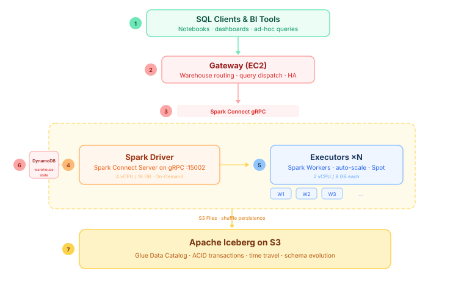
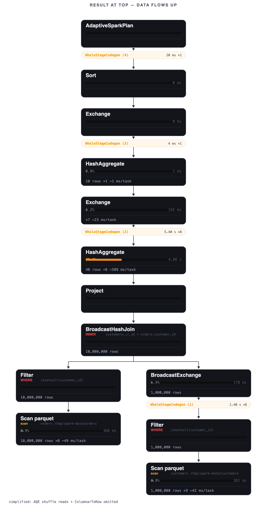
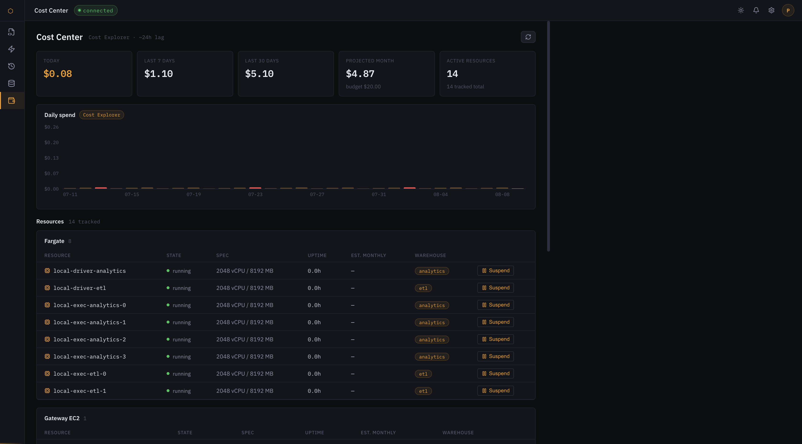

Flashpoint is a warehouse-shaped control plane for Apache Spark. Warehouses are clusters of ECS Fargate tasks — an on-demand driver plus spot executors — exposed to SQL clients over the Spark Connect gRPC protocol, with query profiles rendered the way Snowflake taught us to expect.
Stock Apache Spark Connect as the client protocol. No fork — plugin hooks only. gRPC from any language to a SQL engine.
gRPCstock sparkA warehouse is a cluster of ECS Fargate tasks: one on-demand driver, n spot executors. T-shirt sizing maps to vCPU / memory / node count.
on-demand driverspot executorsA stateless control plane — all state in DynamoDB, never in-memory. Creates, suspends and resumes warehouses, routes queries, meters usage.
fastapidynamodbEvery query renders as an operator tree: per-node duration, % of execution time, column treatments — parsed from the stock Spark UI REST API.
spark ui apidag
Snowflake's killer feature is the query profile: every operator shows what it did, how long it took, and how it treated your columns. Flashpoint grew the same UI from the stock Spark UI — no fork, no agent. Every node is a card: operator name, % of execution time (color-heated), duration, rows in/out. Codegen stages render as slim chips; every profile has a reload-safe URL.

Every resource with its state, uptime and monthly estimate — drivers and executors joined to the warehouse they serve, the always-on gateway EC2, and the tag-registry infra. Daily spend comes from Cost Explorer (tag-filtered, ~24h lag) fused with live per-warehouse meters for today, projected against a monthly budget with spike-day flags. Every row deep-links to the AWS console.

OpenTofu brings up the whole production shape: t4g.small EC2 gateway (self-boots via
user-data), Spark Connect drivers on Fargate with spot executors, DynamoDB state. The
gateway clones main, so every deploy ships the current UI and API.
~$14/mo baseline while idle (gateway + EBS + pennies), warehouses bill only while running (~$0.08/h for XS). Real Cost Center numbers from Cost Explorer, tag-filtered.
~$14/mo idle$0.08/h XS| milestone | layer | scope |
|---|---|---|
| Ember | storage + compute | driver, executors, shuffle, benchmarks |
| Kindle | warehouse | manager, router, metering, sizing |
| Forge | catalog | Iceberg, Glue, IAM isolation |
| Beacon | ui | worksheet, profile DAG, warehouse manager, data explorer |
Status, issues and milestones are tracked on the GitHub project board. Architecture decisions live in docs/adr-*.md.